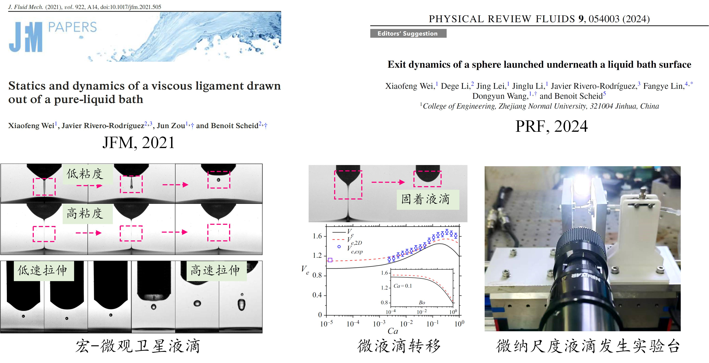

Interfacial Flow and Intelligent Manufacturing Group
Fundamental fluid mechanics for precision control in industrial applications

We combine numerical simulation and experiments to uncover the physics of complex fluid phenomena and translate fundamental understanding into engineering practice.
Our work focuses on interfacial fluid mechanics, micro- and nanoscale inkjet printing, and lubrication in axial piston machines.